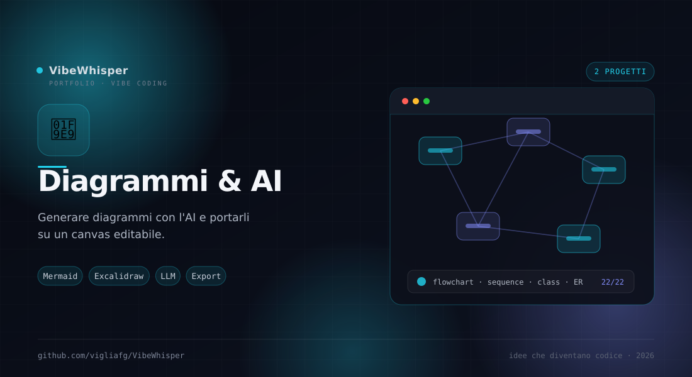

🧩
Diagrammi & AI
Mermaid, Excalidraw e AI: generare diagrammi, rifinirli in un workspace e convertirli in elementi editabili su un canvas.
2
Progetti
22
Tipi Mermaid
13
Temi
0
Cloud
Sezione 05 · Diagrammi
Dall'idea al diagramma editabile
Due progetti complementari: Mermaid Creator è il workspace desktop dove il diagramma nasce e viene rifinito; mermaid-to-excalidraw è la libreria che lo trasforma in forme modificabili.
Come sono collegati
Fili comuni
Uno genera e organizza, l'altro converte. Insieme coprono il ciclo dal prompt all'export.
- Mermaid Creator — Chat AI, workspace, temi, versioni e libreria. Esporta SVG, PNG e .mmd.
- mermaid-to-excalidraw — Fork con 22 casi convertiti nativamente in elementi Excalidraw editabili.